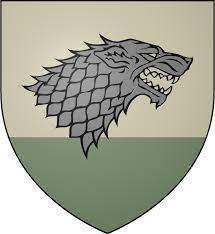

House Stark of Winterfell is a Great House of Westeros and the royal house of the Kingdom of the North. They rule over the vast region known as the North from their seat in Winterfell. It is one of the oldest lines of Westerosi nobility by far, claiming a line of descent stretching back over eight thousand years. Before Aegon's Conquest, as well as during the War of the Five Kings and early on in the Last War, the leaders of House Stark ruled over the region as the Kings in the North. Their rule in the North seemingly ended after the events of the Red Wedding when House Frey and House Bolton betrayed House Stark after forming a secret alliance with House Lannister, during which Roose Bolton murdered King Robb Stark. Both the North and Winterfell were taken over by House Bolton. However, the Boltons' hold was jeopardized when Sansa Stark escaped their clutches after learning her brothers Bran and Rickon Stark were still alive and reunited with her half-brother, Jon Snow, at Castle Black. Sansa and Jon marched on the Boltons to save their younger brother Rickon, who was later murdered by Ramsay Bolton, and retake Winterfell. House Stark was restored to their former stature after the Battle of the Bastards. The Stark victory led to House Stark's return to royal status in the North with their bannermen declaring Jon as the King in the North. He later abdicated his title as king in order to gain the full support of Daenerys Targaryen in the Great War, becoming the Warden of the North. Following the Battle of King's Landing, Bran Stark was chosen as the new king of the Six Kingdoms, allowing the North to secede as an independent kingdom under Sansa. House Stark's sigil is a grey direwolf on a white background, over green. They are one of the few noble houses whose words are not a boast or threat. Instead, the House Stark family motto is a warning, one that, no matter the circumstances, will always be relevant: "Winter Is Coming," which served as a reminder of their beginnings in the wake of the Long Night and a grim portent of things to come. House Stark, as the only First Men dynasty to resist the coming of the Andals, proudly hold on to the worship of the Old Gods. Due to their rule over the North and knowledge of it's troubles, they are unfailing supporters of the importance of the Night's Watch, despite it's fall from glory in current times. As one of the last remaining Valyrian steel items, from Old Valyria, House Stark greatly treasures it's ancestral sword of Ice, which has been used in battles and executions.
Before Aegon's Conquest, the leaders of House Stark ruled over the region as the Kings in the North. The house traces its roots to Bran the Builder, a legendary First Man who lived during the Age of Heroes and founded House Stark. The Starks were not originally the monarchs of the North; they began as vassals to the Barrow Kings, who lost support due to their inactive rule while their ancestor Bran the Builder built the Wall and protected the North. They warred with the Barrow Kings, emerging victorious. The Starks ruled as Kings of Winter over one of the many smaller, petty First Men kingdoms that were established in the North, with their chief rivals for domination being the Red Kings of House Bolton. Eventually the Starks united the North under them. Although their stronghold of Winterfell has been the capital of the North, war helped make it it's strongest castle, in opposition to the Reeds' Greywater Watch and the Dreadfort of House Bolton, with attacks from from the latter raising the need for more keeps, more walls, more guard towers and the expansion of their granaries and larders to survive sieges. Winter town would be raised from smallfolk seeking shelter from winter, and these would also join the Stark soldiers in fighting the Boltons. They gained a new vassal from the Reach after House Manderly's exile, giving them a new home at White Harbor in exchange for their guarding the river against pirates. They defeated the Boltons, drove pirates away from the White Knife, slew the last Marsh King and wed his daughter for the Neck, with it's governance being given to House Reed and, according to legend, King Rodrik Stark wrestled with an ironborn for Bear Island and won, giving it to House Mormont. Karlon Stark, a younger son of the King in the North, was awarded lands in the eastern regions of the North after successfully putting down a rebellion led by House Bolton. Over time Karlon's seat of Karl's Hold came to be known as Karhold, and the Starks that descended from him became known as Karstarks. Although the Starks had to content with defiant Houses in their unification campaign, some chose to submit and become loyal vassals, like the Umbers of Last Hearth and the Glovers of Deepwood Motte, with even their greatest rivals for dominance, the Red Kings of House Bolton, who made a sinister reputation for themselves with their practice of flaying, with one of them being notorious for ripping out the entrails of captive Starks, choosing to bend the knee, and their hostility being put on hold, due to the need for the end of unrest. Their timing proved crucial just then, due to the Andals landing and invading Westeros, swiping all lands of First Men rule except the North due to the other Houses fighting on their own, while the North opposed with a united front, with the Manderlys attacking their ships and the Reeds attacking their incursions into the Neck. King Torrhen Stark was on the throne at the time of Aegon's Conquest and marched his army south to face them. He surrendered when he saw the Targaryens' greater host and their dragons, despite being suggested to resist from Moat Cailin or assassinating the sleeping dragons, believing that fighting was futile, due to the Targaryen victories at the Burning of Harrenhal and the Field of Fire. He was made Warden of the North, thus escaping the fates of House Gardener of the Reach and House Hoare of the Riverlands whose lords refused to bend the knee and were rendered extinct after failing to resist the invaders. Thereafter, Torrhen was known as "the king who knelt", though those who criticize him for this often forget that they are only alive to do so thanks to his surrender. Centuries later, Lady Lyanna Stark was taken by Prince Rhaegar Targaryen, and when her father and brother demanded justice, King Aerys II Targaryen had them both viciously executed. Eddard Stark claimed his father's titles and participated in Robert's Rebellion.[4] At the end of the rebellion, Eddard found his sister in the Tower of Joy, where she perished in a bed of blood. Eddard is married to Lady Catelyn Tully of Riverrun, and has five children with her: Robb, Sansa, Arya, Bran, and Rickon. He also has a rumored bastard son, Jon Snow, who is actually the offspring of Prince Rhaegar and Lady